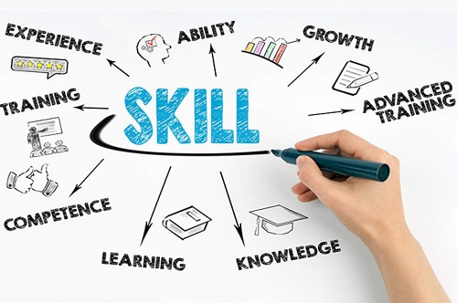
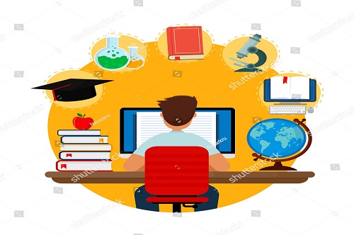

About Us
What is ALTAELIM?
- ALTAELIM is online learning platform that provide different Skills full Courses.
- We are here to bridge the gap between the quality of skills demanded by industry and the quality of skills imparted by conventional institutes.
- At ALTAELIM, we strive to increase student interest by providing different assignments and projects. We create simplified and interactive learning experiences.
Our Vision
- Our mission is to build the capacity of student for the purposeful integration
of learning with technology.
- To lead in the development and delivery of innovative digital learning
experiences.
- To build a digital community that engages everyone in continuous
learning, communication and collaboration.
- We work for the future of e-learning, this digital design will forever change the
way of teaching.
- To be a world-class provider of Learning Solutions that help the student.

Our approach
- We completely transformed the way in which learning is imparted to students.
Unlike traditional chalk and board method of teaching, eLearning makes learning
simpler, easier, and more effective.
- E-Learning is the process of using technology to assist learning and tutoring.
Enhancement in how the Internet works has allowed websites to deliver a visual
and immersive learning experience on a computer or mobile device, perfect
for stimulating a student and encouraging learning.
- We provide cost effective as compared to traditional forms of learning.
The reason for this price reduction is because learning through this mode
happens quickly and easily. A lot of training time is reduced with respect
to trainers, travel, course materials, and accommodation.
- As eLearning is a paperless way of learning, it protects the environment to a lot
of extent. As per a study done on eLearning courses, it has been found that
distance-based learning programs consumed around 90% less power and generated
85% less amount of CO2 emissions as compared to traditional campus-based
educational courses. With eLearning, there is no need to cut trees for
obtaining paper.
eLearning is a highly eco-friendly way of learning.
Our Process
- We offer technologies the most efficient way for students and businesses
to improve skills and track performance or scores.
- E-learning platforms gradually change an eternal issue with the documentation -
all the information on courses, training programs, and students' data is centralized
and safely stored in an online database. No need to visit libraries - you simply
download the necessary course, and - it’s done!
- E-Learning materials are accessible at any time from any place, meaning learning
can fit around your existing daily schedule and eliminate any travel costs associated
with classroom based training.
- We enables you to quickly create and communicate new policies, training, ideas,
and concepts. Online E-Learning sessions are especially easy to keep up-to-date because
the updated materials are simply uploaded to a server and can be managed from anywhere
using a bespoke admin system created to your specific requirements.
